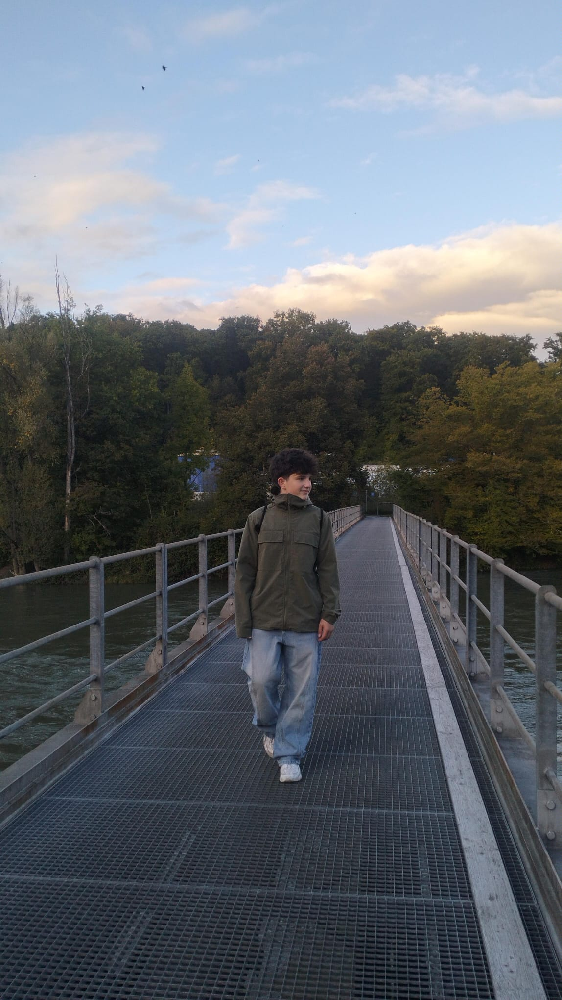
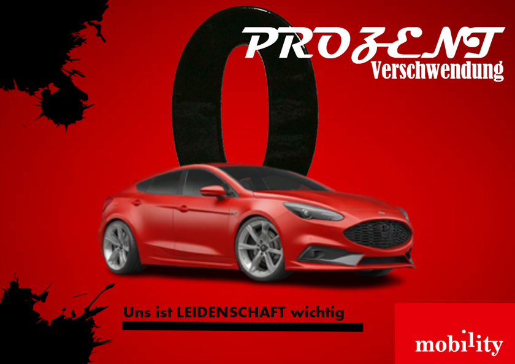
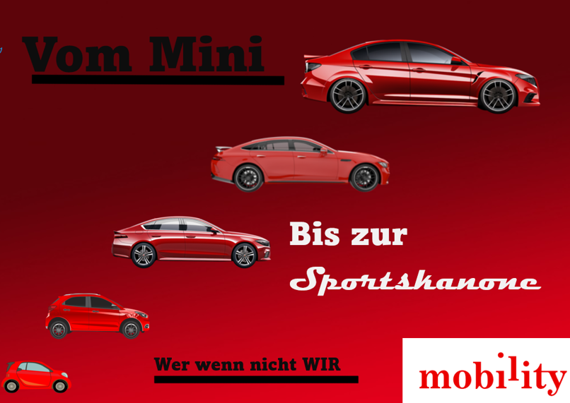
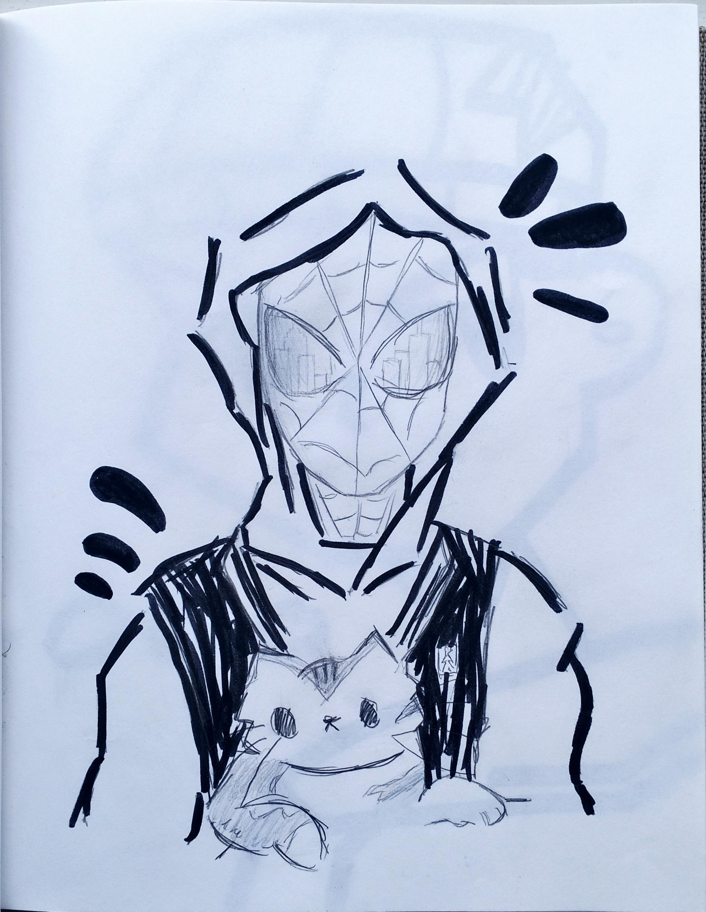
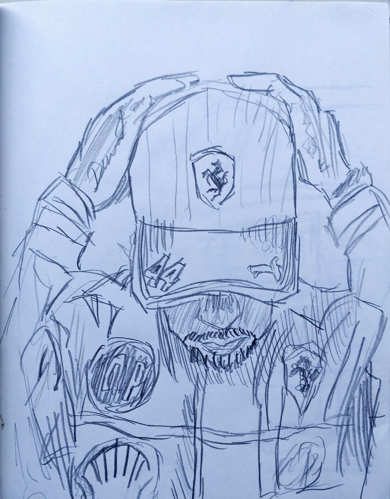
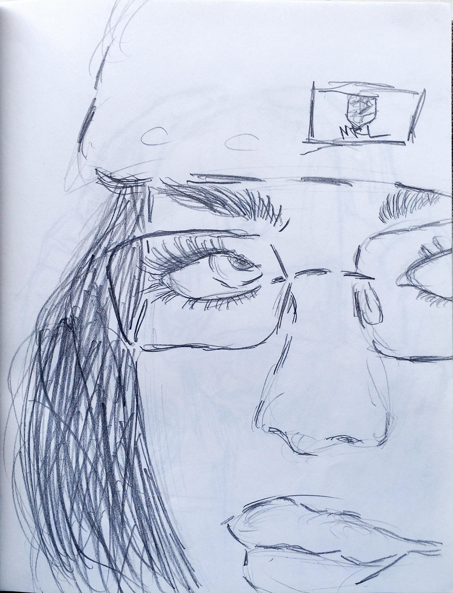
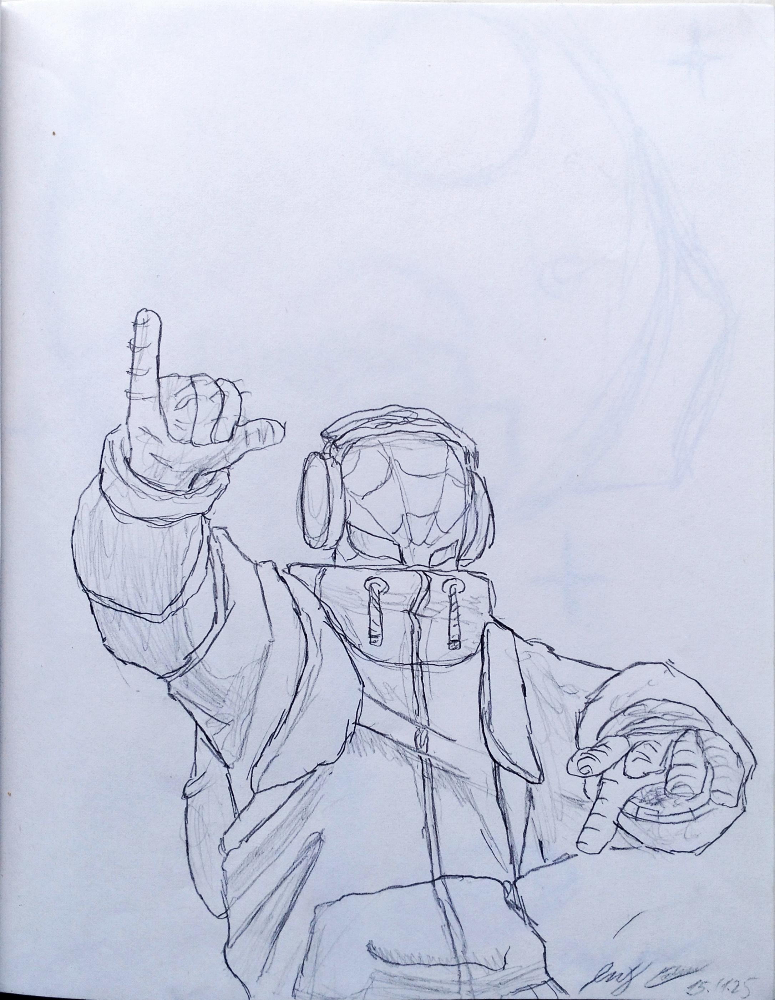
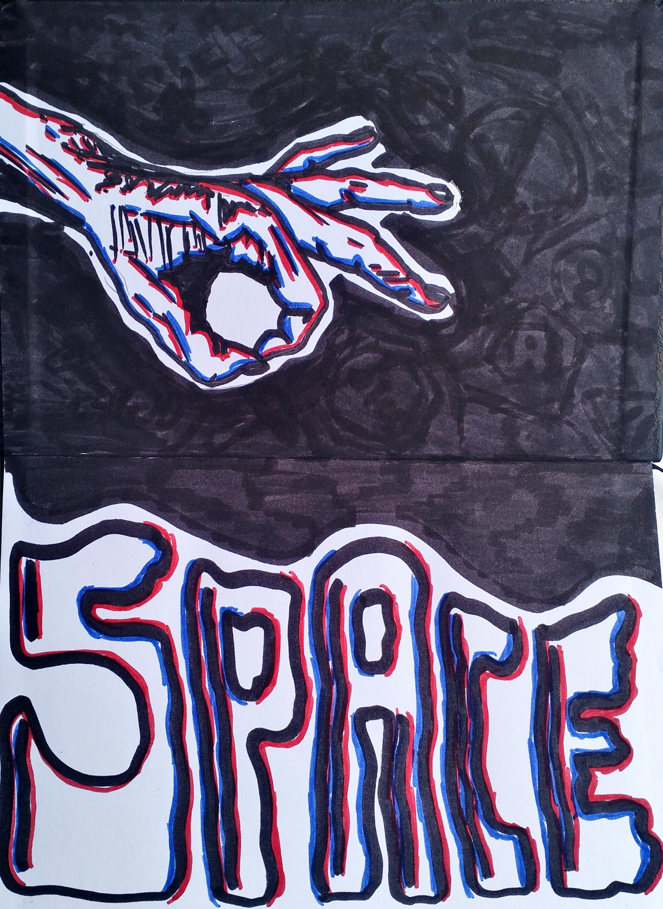

Warum Brack?
Ich möchte meine Lehre als Mediamatiker bei Brack.Alltron AG machen, weil mich Kreativität, Technik und digitale Medien sehr interessieren. Brack.Alltron AG ist ein modernes und innovatives Unternehmen, das grossen Wert auf Qualität und neue Ideen legt. In diesem Umfeld möchte ich lernen und mich weiterentwickeln. Besonders spannend finde ich die verschiedenen Projekte in Bereichen wie Design, Marketing, E-Commerce und Informatik. Dadurch ist die Ausbildung abwechslungsreich und praxisnah. Auch der virtuelle Marktplatz gefällt mir. Ab dem zweiten Lehrjahr können Lernende ihre Ausbildung teilweise selbst mitgestalten und sich auf interessante Aufgaben in verschiedenen Teams bewerben. So können sie neue Bereiche kennenlernen und Verantwortung übernehmen. Ich bin motiviert, zuverlässig und lerne gerne Neues. Deshalb bin ich überzeugt, dass Brack.Alltron AG der richtige Ort für meine Lehre als Mediamatiker ist.

DAS BIN ICH
Motiviert und lernbereit
Ich bin eine offene und zuverlässige Person, die gerne Neues lernt und Herausforderungen motiviert angeht.
Besonders wichtig sind mir Teamarbeit, Verantwortungsbewusstsein und die Möglichkeit, mich persönlich weiterzuentwickeln.
Ich bin motiviert, lernbereit und interessiere mich für neue Herausforderungen.
Ich bin überzeugt, dass man mit Ehrgeiz, Neugier und einer positiven Einstellung viel erreichen kann.
Ich lerne gerne Neues und nehme Feedback als Chance, mich weiterzuentwickeln.
Ich arbeite zuverlässig, übernehme Verantwortung und bringe mich gerne ins Team ein.
Ich bin kreativ, offen für neue Ideen und freue mich darauf, mich ständig weiterzuentwickeln.
Ich gehe Herausforderungen mit Geduld und Motivation an und möchte jeden Tag etwas dazulernen.
5507 Mellingen
andromaelkaelin@gmx.ch
+41 77 531 45 40
kleiner Einblick in meine kreativen Projekte
Meine Fotogalerie







Danke fürs Anschauen
Dieses Portfolio gibt einen persönlichen Eindruck von mir und meiner Bewerbung.
Zurück zum Video